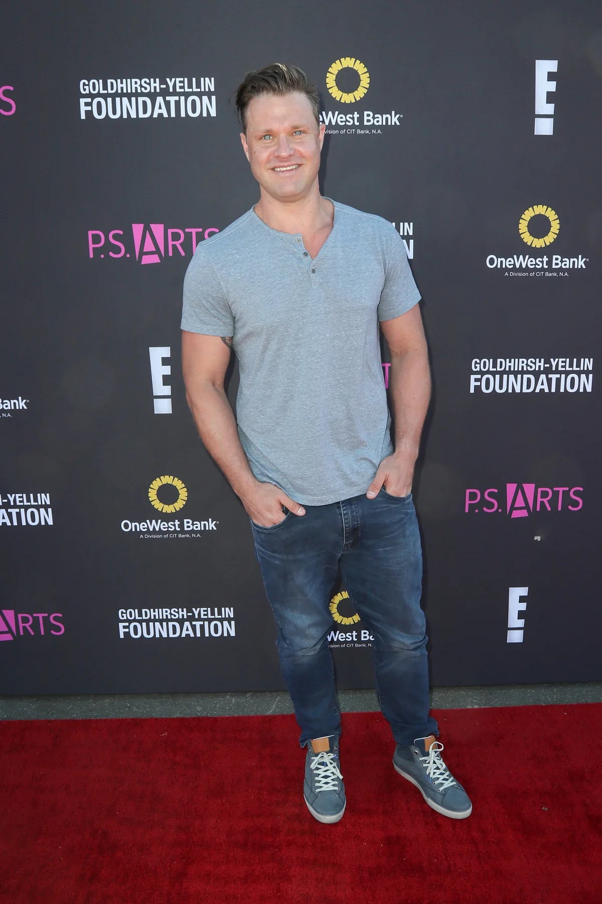
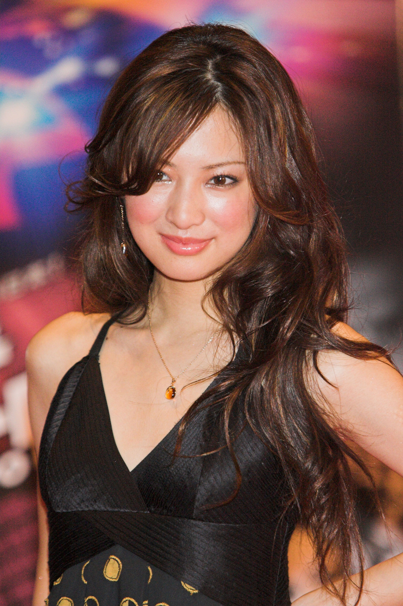

Nascimento: 29 de novembro de 1982 (idade 40 anos), Decatur, Alabama, EUA
Informação de Destaque: Os papéis mais conhecidos que interpretou são Caleb Temple em American Gothic, Frank Wheatley em Sling Blade, e Sean Boswell em Velozes e Furiosos: Desafio em Tóquio, Velozes e Furiosos 7 e Velozes e Furiosos 9
Sung Kang
Nascimento: 8 de abril de 1972 (idade 51 anos),Gainesville, Geórgia, EUA
Informação de Destaque: filho de imigrantes vindos da Coreia do Sul. Ele interpretou Han em Velozes e Furiosos: Desafio em Tóquio , Velozes e Furiosos 4 , Velozes e Furiosos 5 e Velozes e Furiosos 6.
Brian Tee
Nascimento: 15 de março de 1977 (idade 46 anos), Okinawa, Japão
Informação de Destaque: Jaebeom Takata, mais conhecido pelo seu nome artístico Brian Tee, é um ator japonês naturalizado norte-americano. Ficou conhecido pelo seu papel como Dr.
Nathalie Kelley
Nascimento: 3 de março de 1985 (idade 38 anos), Lima, Peru
Informação de Destaque: Nathalie Kelley é uma atriz australiana, nascida no Peru. Ela ficou mais conhecida por interpretar Neela no filme The Fast and the Furious: Tokyo Drift. Também teve destaque em séries de televisão como The Vampire Diaries e Dynasty, ambas da emissora The CW nos Estados Unidos
Bow How
Nascimento: 9 de março de 1987 (idade 36 anos), Columbus, Ohio, EUA
Informação de Destaque: Shad Gregory Moss mais conhecido pelo nome artístico Bow Wow é um rapper, ator e apresentador norte-americano. Seu álbum de estreia Beware of Dog foi lançado em 2000, sendo produzido por Jermaine Dupri
Nikki Griffin
Nascimento: 16 de abril de 1978 (idade 45 anos), Vicksburg, Mississípi, EUA
Informação de Destaque: Embora Griffin tenha nascido em Vicksburg, Mississippi, a maior parte de sua infância foi vivida na Alemanha, onde seus pais trabalhavam para o governo dos Estados Unidos. Ela voltou para os Estados Unidos na adolescência e foi para a escola New Hanover School Wilmington, Carolina do Norte.
Zachery Ty Bryan

Nascimento: 9 de outubro de 1981 (idade 41 anos), Aurora, Colorado, EUA
Infomação de Destaque: Traduzido do inglês-Zachery Tyler Bryan é um ator e produtor de cinema americano. Ele é mais conhecido por seu papel como Brad Taylor na sitcom Home Improvement da ABC. Ele também apareceu nos filmes True Heart e The Fast and the Furious: Tokyo Drift.
Keiko Kitagawa

Nascimento: 22 de agosto de 1986 (idade 36 anos), Chuo Ward, Kōbe, Hyōgo, Japão
Informação de Destaque: Keiko Kitagawa, é uma atriz japonesa. Keiko Kitagawa tornou-se conhecida com o papel de Rei Hino/Sailor Mars, na série tokusatsu Bishoujo Senshi Sailor Moon - Live Action. Começou a sua carreira, por acaso, em 2003 como modelo para a revista Seventeen, após ter sido a vencedora do concurso da revista desse ano.